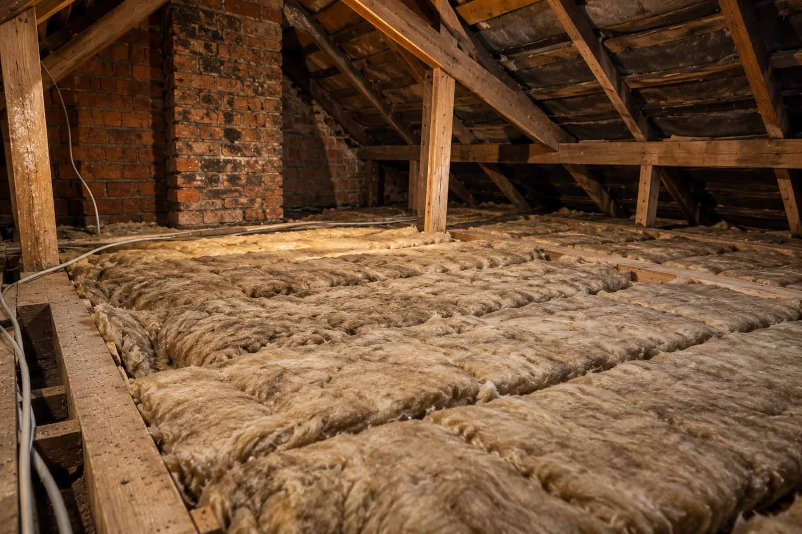

Full Loft Insulation Installation
Insulation for lofts that need a new installation. The right approach depends on your loft’s layout, access and ventilation.
Read more →Loft insulation, top-ups, removal and boarding for homes across Leicester. Tell us about your loft and the improvements you have in mind.
Whether your loft needs insulating from scratch, an extra layer of insulation or a boarded storage area, start by discussing the options for your home.
Insulation for lofts that need a new installation. The right approach depends on your loft’s layout, access and ventilation.
Read more →Add to existing insulation where it is suitable. Check the depth and condition of the current material before deciding what is needed.
Read more →Explore boarding for storage and access, with space for insulation underneath and consideration for airflow.
Read more →Discuss removing old or damaged insulation and preparing the space for replacement material.
Read more →Not sure what is already in your loft? Share details of the space and what you would like to improve.
Read more →Get help choosing a starting point for insulation or boarding.
Loft insulation helps reduce heat escaping through the roof. The work your home needs will depend on the loft’s condition and any insulation already in place.
If you use your loft for storage, boarding and access should be considered alongside the insulation.

Insulation, boarding and access — see the different parts of a loft space.
Images supplied for this website preview.
View Photo Gallery →Planning loft insulation work in Leicester or the surrounding area? Include your postcode with your enquiry so coverage can be confirmed for your property.
Ask About Your Area →Often it can, provided the existing material is dry and suitable. The depth, condition and ventilation should be checked before adding more.
Potentially. A suitable raised boarding system can allow for insulation without compressing it. Structural suitability, access and airflow need to be assessed.
Costs depend on the loft’s size, access and condition, plus the work required. A written quote should set out the scope and price before you proceed.
Not always. Dry insulation in good condition may be retained. Damp or damaged material needs assessment before deciding what to do.
Tell us about your home and the work you’re considering.